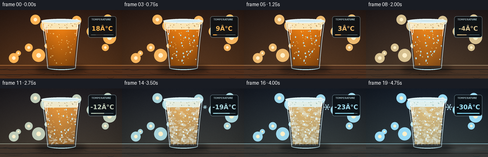
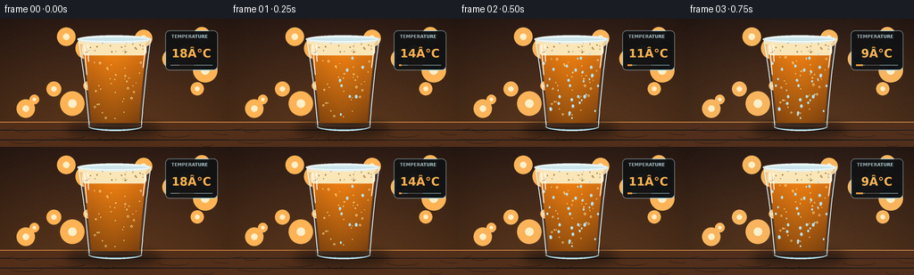
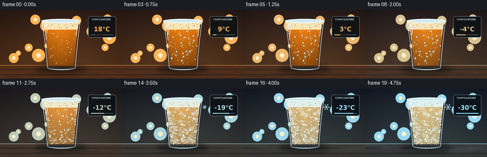
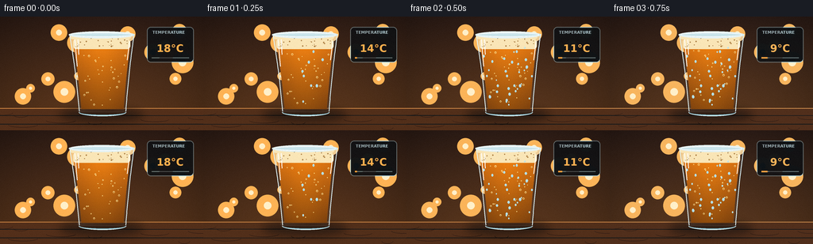

CODING AGENTS AS PIXEL WORLD MODELS
traex/GPT-5.6-Sol · phygen_095
点击播放 · 原生 RGB 像素
逐轮保存的候选
回放视频、检查图与代码变化。
每份候选均可单独播放。实际图片检查记录在下方工具轨迹中。
候选 01播放与检查图
点击播放 · 原生 RGB 像素


展开代码变化
--- 上一保存版本
+++ 本次保存版本
@@ -0,0 +1,333 @@
+from pathlib import Path
+import math, random
+import numpy as np
+from PIL import Image, ImageDraw, ImageFont, ImageFilter
+import artifact_io
+
+W, H, N = 256, 144, 20
+S = 4
+SW, SH = W*S, H*S
+ROOT = Path(__file__).resolve().parent
+
+# Fonts bundled with the local OS; generation remains entirely local.
+FONT_REG = "/usr/share/fonts/truetype/dejavu/DejaVuSans.ttf"
+FONT_BOLD = "/usr/share/fonts/truetype/dejavu/DejaVuSans-Bold.ttf"
+
+def font(path, size):
+ try: return ImageFont.truetype(path, size*S)
+ except: return ImageFont.load_default()
+
+def scpt(p): return tuple(int(round(v*S)) for v in p)
+def pts(seq): return [scpt(p) for p in seq]
+def lerp(a,b,t): return a+(b-a)*t
+def mix(c1,c2,t): return tuple(int(lerp(c1[i],c2[i],t)) for i in range(len(c1)))
+def clamp(x,a=0,b=1): return max(a,min(b,x))
+def smooth(x):
+ x=clamp(x); return x*x*(3-2*x)
+
+def glass_lr(y, inset=0):
+ # A slightly flared pilsner/pint glass.
+ q=clamp((y-20)/103)
+ left=87 + 13*q + 1.2*math.sin(q*math.pi)
+ right=169 - 11*q - 1.0*math.sin(q*math.pi)
+ return left+inset, right-inset
+
+def body_poly(y0=22, y1=121, inset=0):
+ ys=np.linspace(y0,y1,60)
+ left=[glass_lr(float(y),inset) for y in ys]
+ return [(x[0],float(y)) for x,y in zip(left,ys)] + [(glass_lr(float(y),inset)[1],float(y)) for y in ys[::-1]]
+
+# Static procedural detail is stable across frames, making this a coherent timelapse.
+rng=random.Random(95173)
+bokeh=[(rng.uniform(8,248),rng.uniform(9,105),rng.uniform(4,14),rng.random()) for _ in range(16)]
+wood_knots=[(rng.uniform(0,256),rng.uniform(121,142),rng.uniform(7,20)) for _ in range(8)]
+drops=[]
+for _ in range(34):
+ y=rng.uniform(38,112); l,r=glass_lr(y,4)
+ drops.append((rng.uniform(l,r),y,rng.uniform(.65,1.55),rng.uniform(0,1)))
+bubbles=[]
+for _ in range(34):
+ y=rng.uniform(45,112); l,r=glass_lr(y,7)
+ bubbles.append((rng.uniform(l,r),y,rng.uniform(.35,1.25),rng.uniform(0,1)))
+
+# Ice shard polygons, biased to nucleate first at glass walls and the base.
+shards=[]
+for _ in range(115):
+ y=rng.uniform(39,116); l,r=glass_lr(y,3)
+ x=rng.uniform(l,r)
+ edge=min(x-l,r-x)/max(1,(r-l)/2)
+ bottom=(116-y)/77
+ onset=.12 + .56*min(edge, bottom) + rng.uniform(-.08,.12)
+ rad=rng.uniform(2.0,7.2)
+ ang=rng.uniform(0,math.pi)
+ nv=rng.choice([3,4,5,6])
+ poly=[]
+ for j in range(nv):
+ a=ang+2*math.pi*j/nv+rng.uniform(-.18,.18)
+ rr=rad*rng.uniform(.45,1.25)
+ poly.append((x+math.cos(a)*rr, y+math.sin(a)*rr*.55))
+ shards.append((onset,poly,rng.random()))
+
+# Exterior dendritic frost: branching structures growing inward from edges/base.
+branches=[]
+def grow_branch(x,y,ang,length,depth,onset,seed):
+ rr=random.Random(seed)
+ if depth<=0 or length<1.1: return
+ x2=x+math.cos(ang)*length; y2=y+math.sin(ang)*length
+ branches.append((onset,x,y,x2,y2,max(.28,depth*.28),rr.random()))
+ # staggered side branches create recognizable feathery ice crystals
+ for sign in (-1,1):
+ a=ang+sign*rr.uniform(.42,.78)
+ grow_branch(x2,y2,a,length*rr.uniform(.50,.67),depth-1,onset+.035,seed*3+sign+7)
+ if depth>=3:
+ grow_branch(x2,y2,ang+rr.uniform(-.16,.16),length*.73,depth-1,onset+.025,seed*5+11)
+
+for i in range(7):
+ y=42+i*10+rng.uniform(-2,2)
+ l,r=glass_lr(y,1)
+ grow_branch(l,y,rng.uniform(-.32,.25),rng.uniform(6,10),3,.10+i*.035,100+i)
+ grow_branch(r,y,math.pi+rng.uniform(-.25,.32),rng.uniform(6,10),3,.12+i*.035,200+i)
+for i in range(8):
+ x=102+i*7+rng.uniform(-2,2)
+ grow_branch(x,119,-math.pi/2+rng.uniform(-.22,.22),rng.uniform(6,11),3,.08+i*.025,300+i)
+
+# Fine crystalline stars on the outer wall.
+frost_stars=[]
+for _ in range(62):
+ y=rng.uniform(28,117); l,r=glass_lr(y,2)
+ # favor edges and bottom
+ if rng.random()<.7:
+ x = rng.choice([rng.uniform(l,l+11),rng.uniform(r-11,r)])
+ else: x=rng.uniform(l,r)
+ dist=min(x-l,r-x,117-y)
+ onset=.20+dist/45+rng.uniform(-.08,.15)
+ frost_stars.append((onset,x,y,rng.uniform(1.0,3.0),rng.uniform(0,math.pi)))
+
+def add_text_center(draw, xy, text, fnt, fill):
+ box=draw.textbbox((0,0),text,font=fnt)
+ draw.text((int(xy[0]*S-(box[2]-box[0])/2), int(xy[1]*S-(box[3]-box[1])/2)),text,font=fnt,fill=fill)
+
+def render_frame(fi):
+ t=fi/(N-1)
+ cool=smooth(t)
+ # Background transforms from a warm bar ambience to steel-blue cold.
+ warm_top=np.array([47,29,22.],float); warm_bot=np.array([104,62,31.],float)
+ cold_top=np.array([17,31,47.],float); cold_bot=np.array([46,72,82.],float)
+ top=warm_top*(1-cool*.82)+cold_top*(cool*.82)
+ bot=warm_bot*(1-cool*.78)+cold_bot*(cool*.78)
+ yy=np.linspace(0,1,SH)[:,None,None]
+ bg=top[None,None,:]*(1-yy)+bot[None,None,:]*yy
+ bg=np.repeat(bg,SW,axis=1)
+ # Gentle vignette and counter light.
+ X,Y=np.meshgrid(np.arange(SW),np.arange(SH))
+ vign=np.clip(1-0.23*((X-SW*.5)/(SW*.55))**2-0.10*((Y-SH*.45)/(SH*.55))**2,.68,1)[...,None]
+ bg=np.clip(bg*vign,0,255).astype(np.uint8)
+ im=Image.fromarray(bg,'RGB').convert('RGBA')
+ d=ImageDraw.Draw(im,'RGBA')
+
+ # Defocused lights in the back of the room.
+ for bx,by,br,rv in bokeh:
+ alpha=int((24+30*rv)*(1-.42*cool))
+ col=mix((255,179,84,alpha),(151,218,246,alpha),cool)
+ d.ellipse(scpt((bx-br,by-br,bx+br,by+br)),fill=col)
+ d.ellipse(scpt((bx-br*.35,by-br*.35,bx+br*.35,by+br*.35)),fill=(255,240,202,alpha//2))
+
+ # Wood/stone tabletop.
+ table_col=mix((83,47,26,255),(46,61,66,255),cool*.75)
+ d.rectangle(scpt((0,116,256,144)),fill=table_col)
+ d.line(scpt((0,116,256,116)),fill=mix((200,129,65,150),(153,210,224,145),cool),width=S)
+ for k,(kx,ky,kw) in enumerate(wood_knots):
+ col=mix((44,25,18,70),(26,47,52,65),cool)
+ d.arc(scpt((kx-kw,ky-3,kx+kw,ky+3)),0,180,fill=col,width=max(1,S//2))
+ for yline in (125,136):
+ d.line(scpt((0,yline,256,yline+rng.uniform(-.3,.3))),fill=(22,25,26,38),width=1*S)
+
+ # Soft cast shadow, bluer and slightly broader late in the sequence.
+ shadow=Image.new('RGBA',(SW,SH),(0,0,0,0)); sd=ImageDraw.Draw(shadow,'RGBA')
+ sd.ellipse(scpt((74,116,181,133)),fill=(4,10,14,120))
+ shadow=shadow.filter(ImageFilter.GaussianBlur(5*S)); im=Image.alpha_composite(im,shadow); d=ImageDraw.Draw(im,'RGBA')
+
+ # Temperature monitor: a visual anchor showing the continuous physical change.
+ panel=Image.new('RGBA',(SW,SH),(0,0,0,0)); pd=ImageDraw.Draw(panel,'RGBA')
+ pd.rounded_rectangle(scpt((185,13,244,58)),radius=5*S,fill=(8,14,19,186),outline=(174,215,226,105),width=S)
+ pd.text(scpt((192,17)),"TEMPERATURE",font=font(FONT_BOLD,5),fill=(183,210,217,210),spacing=0)
+ # Cooling accelerates through freezing, like a timelapse in a cold chamber.
+ temp=round(18-48*(t**.88))
+ temp_string=f"{temp:+d}°C" if temp<0 else f"{temp}°C"
+ add_text_center(pd,(214.5,37.5),temp_string,font(FONT_BOLD,13),mix((255,176,77,255),(157,226,255,255),cool))
+ # tiny descending indicator line
+ pd.line(pts([(191,52),(238,52)]),fill=(97,121,130,130),width=S)
+ pd.line(pts([(191,52),(191+47*t,52)]),fill=mix((255,157,54,230),(132,222,255,230),cool),width=2*S)
+ im=Image.alpha_composite(im,panel); d=ImageDraw.Draw(im,'RGBA')
+
+ # Glass outer body: transparent haze clipped to the glass silhouette.
+ glassmask=Image.new('L',(SW,SH),0); gm=ImageDraw.Draw(glassmask)
+ gm.polygon(pts(body_poly()),fill=225)
+ gm.ellipse(scpt((87,115,158,125)),fill=225)
+ glass_layer=Image.new('RGBA',(SW,SH),(0,0,0,0)); gd=ImageDraw.Draw(glass_layer,'RGBA')
+ gd.polygon(pts(body_poly()),fill=mix((232,241,241,20),(213,243,255,43),cool))
+ # subtle left-to-right inner glass shading
+ for xx in range(88,170,2):
+ a=int(5+13*abs(xx-129)/42)
+ gd.line(scpt((xx,23,xx+10,120)),fill=(214,242,251,a),width=2*S)
+ glass_layer.putalpha(Image.composite(glass_layer.getchannel('A'),Image.new('L',(SW,SH),0),glassmask))
+ im=Image.alpha_composite(im,glass_layer)
+
+ # Beer interior, with a slight freeze expansion lifting the surface.
+ freeze=smooth((t-.30)/.66)
+ beer_top=34-2.4*freeze
+ beer_mask=Image.new('L',(SW,SH),0); bm=ImageDraw.Draw(beer_mask)
+ inner=body_poly(beer_top,117,3)
+ bm.polygon(pts(inner),fill=255)
+ ltop,rtop=glass_lr(beer_top,3)
+ bm.ellipse(scpt((ltop,beer_top-3,rtop,beer_top+4)),fill=255)
+ beer=np.zeros((SH,SW,4),dtype=np.uint8)
+ for yi in range(SH):
+ ny=yi/SH
+ base=mix((219,116,19,242),(113,59,14,248),clamp((ny-.23)/.62))
+ iced=mix(base,(203,220,190,245),freeze*.62)
+ beer[yi,:,0:4]=iced
+ # luminous vertical core
+ xx=np.arange(SW)[None,:]/S
+ glow=np.exp(-((xx-127)/25)**2)
+ beer[:,:,0]=np.clip(beer[:,:,0]+glow*26*(1-freeze*.45),0,255)
+ beer[:,:,1]=np.clip(beer[:,:,1]+glow*16*(1-freeze*.4),0,255)
+ beer_img=Image.fromarray(beer,'RGBA'); beer_img.putalpha(beer_mask)
+ im=Image.alpha_composite(im,beer_img); d=ImageDraw.Draw(im,'RGBA')
+
+ # Curved liquid surface and meniscus.
+ d.ellipse(scpt((ltop,beer_top-2.2,rtop,beer_top+3.2)),fill=mix((239,157,43,175),(218,233,216,220),freeze),outline=(255,226,160,150),width=S)
+ d.arc(scpt((ltop+1,beer_top-1.8,rtop-1,beer_top+3)),180,356,fill=(255,239,193,185),width=S)
+
+ # Bubbles rise quickly while warm, then become trapped as freezing starts.
+ motion_factor=(1-freeze)**2
+ for bx,by,br,phase in bubbles:
+ y=beer_top+4+((by-beer_top-4-fi*(1.15+phase)*motion_factor)%(112-beer_top))
+ if y<beer_top+4 or y>114: continue
+ alpha=int(125*(1-freeze*.82))
+ d.ellipse(scpt((bx-br,y-br,bx+br,y+br)),outline=(255,226,145,alpha),width=max(1,S//2))
+ if br>.7: d.ellipse(scpt((bx-br*.25,y-br*.55,bx+br*.05,y-br*.25)),fill=(255,255,224,alpha))
+
+ # Beer ice crystals spread inward from the wall and upward from the bottom.
+ ice_progress=freeze
+ iceclip=Image.new('L',(SW,SH),0); ImageDraw.Draw(iceclip).polygon(pts(body_poly(beer_top,118,3)),fill=255)
+ ice_layer=Image.new('RGBA',(SW,SH),(0,0,0,0)); idr=ImageDraw.Draw(ice_layer,'RGBA')
+ for onset,poly,rv in shards:
+ q=clamp((ice_progress-onset)/.23)
+ if q<=0: continue
+ cx=sum(p[0] for p in poly)/len(poly); cy=sum(p[1] for p in poly)/len(poly)
+ p2=[(cx+(x-cx)*q,cy+(y-cy)*q) for x,y in poly]
+ alpha=int((55+95*rv)*smooth(q))
+ fill=(211+int(20*rv),231+int(14*rv),224+int(18*rv),alpha)
+ idr.polygon(pts(p2),fill=fill,outline=(239,252,250,min(205,alpha+45)))
+ if q>.65:
+ far=max(p2,key=lambda p:(p[0]-cx)**2+(p[1]-cy)**2)
+ idr.line(pts([(cx,cy),far]),fill=(255,255,255,min(190,alpha+35)),width=max(1,S//2))
+ ice_layer.putalpha(Image.composite(ice_layer.getchannel('A'),Image.new('L',(SW,SH),0),iceclip))
+ im=Image.alpha_composite(im,ice_layer); d=ImageDraw.Draw(im,'RGBA')
+
+ # Foam head: soft and lively at first, hard and crystalline at the end.
+ foam_y=beer_top-6
+ foam_col=mix((250,230,183,245),(225,240,238,250),freeze)
+ d.rounded_rectangle(scpt((92,foam_y,164,beer_top+7)),radius=4*S,fill=foam_col)
+ # scalloped cap and foam pockets
+ for j in range(18):
+ rr=random.Random(700+j)
+ x=93+j*4.0+rr.uniform(-1.2,1.2); y=foam_y+rr.uniform(-2.5,1.5); rad=rr.uniform(2.4,5.0)
+ d.ellipse(scpt((x-rad,y-rad*.55,x+rad,y+rad*.55)),fill=foam_col)
+ for j in range(24):
+ rr=random.Random(900+j)
+ x=rr.uniform(95,161); y=rr.uniform(foam_y-1,beer_top+4); rad=rr.uniform(.45,1.25)
+ d.ellipse(scpt((x-rad,y-rad,x+rad,y+rad)),fill=mix((181,135,72,115),(150,191,197,90),freeze),outline=(255,249,219,100))
+ if freeze>.55:
+ # Raised frozen ridges on the immobilized foam.
+ a=int(210*smooth((freeze-.55)/.45))
+ for j in range(7):
+ x=97+j*10
+ d.line(pts([(x,foam_y+1),(x+4,foam_y-3),(x+8,foam_y+1)]),fill=(241,253,255,a),width=S)
+
+ # Condensation beads appear, then turn milky as they freeze to the outside.
+ cond=smooth(t/.32)*(1-smooth((t-.53)/.25))
+ frozen_drop=smooth((t-.47)/.22)
+ for x,y,r,rv in drops:
+ # Different droplets arrive at slightly different times.
+ visible=clamp(cond*1.4-rv*.35) if frozen_drop<.5 else clamp(frozen_drop*1.3-rv*.25)
+ if visible<=0: continue
+ a=int(170*visible)
+ col=mix((178,222,230,a),(225,245,250,a),frozen_drop)
+ d.ellipse(scpt((x-r,y-r*1.28,x+r,y+r*1.28)),fill=(col[0],col[1],col[2],int(a*.48)),outline=col,width=max(1,S//2))
+ d.ellipse(scpt((x-r*.35,y-r*.78,x-r*.05,y-r*.40)),fill=(255,255,255,min(220,a)))
+
+ # Dendritic frost blooms over the exterior after the beer crosses freezing.
+ frost=smooth((t-.42)/.55)
+ frost_layer=Image.new('RGBA',(SW,SH),(0,0,0,0)); fd=ImageDraw.Draw(frost_layer,'RGBA')
+ for onset,x1,y1,x2,y2,lw,rv in branches:
+ q=clamp((frost-onset)/.18)
+ if q<=0: continue
+ xe=lerp(x1,x2,smooth(q)); ye=lerp(y1,y2,smooth(q))
+ a=int((105+110*rv)*q)
+ fd.line(pts([(x1,y1),(xe,ye)]),fill=(222,246,255,a),width=max(1,int(lw*S)))
+ for onset,x,y,r,a0 in frost_stars:
+ q=clamp((frost-onset)/.18)
+ if q<=0: continue
+ rr=r*q; alpha=int(185*q)
+ for k in range(3):
+ a=a0+k*math.pi/3
+ dx=math.cos(a)*rr; dy=math.sin(a)*rr
+ fd.line(pts([(x-dx,y-dy),(x+dx,y+dy)]),fill=(231,249,255,alpha),width=max(1,S//2))
+ frost_layer.putalpha(Image.composite(frost_layer.getchannel('A'),Image.new('L',(SW,SH),0),glassmask))
+ im=Image.alpha_composite(im,frost_layer); d=ImageDraw.Draw(im,'RGBA')
+
+ # Crisp glass rim, bottom, and specular edges always sit above the contents.
+ d.ellipse(scpt((86.5,18.5,169.5,27.5)),fill=(202,229,235,22),outline=mix((236,245,242,190),(220,247,255,235),cool),width=S)
+ d.ellipse(scpt((89,20,167,26)),outline=(255,255,255,82),width=S)
+ left_edge=[glass_lr(y,0)[0] for y in np.linspace(22,120,40)]
+ ys=list(np.linspace(22,120,40))
+ d.line(pts([(x,y) for x,y in zip(left_edge,ys)]),fill=(226,247,251,190),width=S)
+ right_edge=[glass_lr(y,0)[1] for y in ys]
+ d.line(pts([(x,y) for x,y in zip(right_edge,ys)]),fill=(220,244,251,155),width=S)
+ d.arc(scpt((99,116,159,126)),0,180,fill=(226,249,255,205),width=S)
+ d.arc(scpt((100,118,158,125)),0,180,fill=(129,187,204,110),width=S)
+ # Tall specular highlights, increasingly broken by frost.
+ d.line(pts([(94,29),(97,63)]),fill=(255,255,255,int(155*(1-.4*frost))),width=S)
+ d.line(pts([(98,29),(99,48)]),fill=(255,255,255,65),width=S)
+ d.line(pts([(163,31),(160,55)]),fill=(255,255,255,90),width=S)
+
+ # Cold vapor snakes along the tabletop in the last third.
+ vapor=smooth((t-.62)/.35)
+ if vapor>0:
+ mist=Image.new('RGBA',(SW,SH),(0,0,0,0)); md=ImageDraw.Draw(mist,'RGBA')
+ for j in range(8):
+ phase=j*.83+fi*.24
+ cx=35+j*31+math.sin(phase)*15; cy=121+j%3*4+math.cos(phase*.7)*2
+ rx=23+8*math.sin(phase*.5)**2
+ md.ellipse(scpt((cx-rx,cy-3,cx+rx,cy+4)),fill=(192,230,239,int((14+8*(j%2))*vapor)))
+ mist=mist.filter(ImageFilter.GaussianBlur(4*S)); im=Image.alpha_composite(im,mist)
+
+ # A restrained snowflake icon fades in near the final temperature.
+ if t>.56:
+ d=ImageDraw.Draw(im,'RGBA'); q=smooth((t-.56)/.32); cx,cy=174,39
+ for k in range(3):
+ a=k*math.pi/3; dx=math.cos(a)*7*q; dy=math.sin(a)*7*q
+ d.line(pts([(cx-dx,cy-dy),(cx+dx,cy+dy)]),fill=(188,235,250,int(190*q)),width=S)
+ for sign in (-1,1):
+ ex=cx+sign*dx; ey=cy+sign*dy
+ for aa in (-.55,.55):
+ ang=a+(math.pi if sign<0 else 0)+aa
+ d.line(pts([(ex,ey),(ex-math.cos(ang)*2.6*q,ey-math.sin(ang)*2.6*q)]),fill=(188,235,250,int(180*q)),width=max(1,S//2))
+
+ # Downsample for clean anti-aliasing, then add tiny photographic grain.
+ out=im.convert('RGB').resize((W,H),Image.Resampling.LANCZOS)
+ arr=np.asarray(out).astype(np.int16)
+ nr=np.random.default_rng(6000+fi)
+ noise=nr.normal(0,0.75,(H,W,1))
+ arr=np.clip(arr+noise,0,255).astype(np.uint8)
+ return arr
+
+def main():
+ frames=np.stack([render_frame(i) for i in range(N)],axis=0)
+ artifact_io.save(frames,ROOT)
+ print(f"saved {frames.shape[0]} RGB frames at {frames.shape[2]}x{frames.shape[1]}")
+
+if __name__=='__main__':
+ main()
候选 02播放与检查图
点击播放 · 原生 RGB 像素


展开代码变化
--- 上一保存版本
+++ 本次保存版本
@@ -153,7 +153,7 @@
pd.text(scpt((192,17)),"TEMPERATURE",font=font(FONT_BOLD,5),fill=(183,210,217,210),spacing=0)
# Cooling accelerates through freezing, like a timelapse in a cold chamber.
temp=round(18-48*(t**.88))
- temp_string=f"{temp:+d}°C" if temp<0 else f"{temp}°C"
+ temp_string=(f"{temp:+d}" if temp<0 else f"{temp}") + chr(176) + "C"
add_text_center(pd,(214.5,37.5),temp_string,font(FONT_BOLD,13),mix((255,176,77,255),(157,226,255,255),cool))
# tiny descending indicator line
pd.line(pts([(191,52),(238,52)]),fill=(97,121,130,130),width=S)
可观测工具轨迹
实际执行的命令与返回图片。
命令 1exit 0
/bin/bash -lc "cat prompt.txt && printf '\\n---RULES---\\n' && cat GENERATION_RULES.md && printf '\\n---SPEC---\\n' && cat task_spec.json"
命令 2exit 0
/bin/bash -lc "find . -maxdepth 2 -type f -printf '%p\\n' | sort && printf '\\nTOOLS\\n' && which ffmpeg python3 convert || true"
命令 3exit 0
/bin/bash -lc "cat artifact_io.py && python3 - <<'PY'
try:
import PIL; print('PIL',PIL.__version__)
except Exception as e: print(e)
try:
import numpy; print('numpy',numpy.__version__)
except Exception as e: print(e)
PY"命令 4exit 0
/bin/bash -lc "cat > generate.py <<'PY'
from pathlib import Path
import math, random
import numpy as np
from PIL import Image, ImageDraw, ImageFont, ImageFilter
import artifact_io
W, H, N = 256, 144, 20
S = 4
SW, SH = W*S, H*S
ROOT = Path(__file__).resolve().parent
# Fonts bundled with the local OS; generation remains entirely local.
FONT_REG = \"/usr/share/fonts/truetype/dejavu/DejaVuSans.ttf\"
FONT_BOLD = \"/usr/share/fonts/truetype/dejavu/DejaVuSans-Bold.ttf\"
def font(path, size):
try: return ImageFont.truetype(path, size*S)
except: return ImageFont.load_default()
def scpt(p): return tuple(int(round(v*S)) for v in p)
def pts(seq): return [scpt(p) for p in seq]
def lerp(a,b,t): return a+(b-a)*t
def mix(c1,c2,t): return tuple(int(lerp(c1[i],c2[i],t)) for i in range(len(c1)))
def clamp(x,a=0,b=1): return max(a,min(b,x))
def smooth(x):
x=clamp(x); return x*x*(3-2*x)
def glass_lr(y, inset=0):
# A slightly flared pilsner/pint glass.
q=clamp((y-20)/103)
left=87 + 13*q + 1.2*math.sin(q*math.pi)
right=169 - 11*q - 1.0*math.sin(q*math.pi)
return left+inset, right-inset
def body_poly(y0=22, y1=121, inset=0):
ys=np.linspace(y0,y1,60)
left=[glass_lr(float(y),inset) for y in ys]
return [(x[0],float(y)) for x,y in zip(left,ys)] + [(glass_lr(float(y),inset)[1],float(y)) for y in ys[::-1]]
# Static procedural detail is stable across frames, making this a coherent timelapse.
rng=random.Random(95173)
bokeh=[(rng.uniform(8,248),rng.uniform(9,105),rng.uniform(4,14),rng.random()) for _ in range(16)]
wood_knots=[(rng.uniform(0,256),rng.uniform(121,142),rng.uniform(7,20)) for _ in range(8)]
drops=[]
for _ in range(34):
y=rng.uniform(38,112); l,r=glass_lr(y,4)
drops.append((rng.uniform(l,r),y,rng.uniform(.65,1.55),rng.uniform(0,1)))
bubbles=[]
for _ in range(34):
y=rng.uniform(45,112); l,r=glass_lr(y,7)
bubbles.append((rng.uniform(l,r),y,rng.uniform(.35,1.25),rng.uniform(0,1)))
# Ice shard polygons, biased to nucleate first at glass walls and the base.
shards=[]
for _ in range(115):
y=rng.uniform(39,116); l,r=glass_lr(y,3)
x=rng.uniform(l,r)
edge=min(x-l,r-x)/max(1,(r-l)/2)
bottom=(116-y)/77
onset=.12 + .56*min(edge, bottom) + rng.uniform(-.08,.12)
rad=rng.uniform(2.0,7.2)
ang=rng.uniform(0,math.pi)
nv=rng.choice([3,4,5,6])
poly=[]
for j in range(nv):
a=ang+2*math.pi*j/nv+rng.uniform(-.18,.18)
rr=rad*rng.uniform(.45,1.25)
poly.append((x+math.cos(a)*rr, y+math.sin(a)*rr*.55))
shards.append((onset,poly,rng.random()))
# Exterior dendritic frost: branching structures growing inward from edges/base.
branches=[]
def grow_branch(x,y,ang,length,depth,onset,seed):
rr=random.Random(seed)
if depth<=0 or length<1.1: return
x2=x+math.cos(ang)*length; y2=y+math.sin(ang)*length
branches.append((onset,x,y,x2,y2,max(.28,depth*.28),rr.random()))
# staggered side branches create recognizable feathery ice crystals
for sign in (-1,1):
a=ang+sign*rr.uniform(.42,.78)
grow_branch(x2,y2,a,length*rr.uniform(.50,.67),depth-1,onset+.035,seed*3+sign+7)
if depth>=3:
grow_branch(x2,y2,ang+rr.uniform(-.16,.16),length*.73,depth-1,onset+.025,seed*5+11)
for i in range(7):
y=42+i*10+rng.uniform(-2,2)
l,r=glass_lr(y,1)
grow_branch(l,y,rng.uniform(-.32,.25),rng.uniform(6,10),3,.10+i*.035,100+i)
grow_branch(r,y,math.pi+rng.uniform(-.25,.32),rng.uniform(6,10),3,.12+i*.035,200+i)
for i in range(8):
x=102+i*7+rng.uniform(-2,2)
grow_branch(x,119,-math.pi/2+rng.uniform(-.22,.22),rng.uniform(6,11),3,.08+i*.025,300+i)
# Fine crystalline stars on the outer wall.
frost_stars=[]
for _ in range(62):
y=rng.uniform(28,117); l,r=glass_lr(y,2)
# favor edges and bottom
if rng.random()<.7:
x = rng.choice([rng.uniform(l,l+11),rng.uniform(r-11,r)])
else: x=rng.uniform(l,r)
dist=min(x-l,r-x,117-y)
onset=.20+dist/45+rng.uniform(-.08,.15)
frost_stars.append((onset,x,y,rng.uniform(1.0,3.0),rng.uniform(0,math.pi)))
def add_text_center(draw, xy, text, fnt, fill):
box=draw.textbbox((0,0),text,font=fnt)
draw.text((int(xy[0]*S-(box[2]-box[0])/2), int(xy[1]*S-(box[3]-box[1])/2)),text,font=fnt,fill=fill)
def render_frame(fi):
t=fi/(N-1)
cool=smooth(t)
# Background transforms from a warm bar ambience to steel-blue cold.
warm_top=np.array([47,29,22.],float); warm_bot=np.array([104,62,31.],float)
cold_top=np.array([17,31,47.],float); cold_bot=np.array([46,72,82.],float)
top=warm_top*(1-cool*.82)+cold_top*(cool*.82)
bot=warm_bot*(1-cool*.78)+cold_bot*(cool*.78)
yy=np.linspace(0,1,SH)[:,None,None]
bg=top[None,None,:]*(1-yy)+bot[None,None,:]*yy
bg=np.repeat(bg,SW,axis=1)
# Gentle vignette and counter light.
X,Y=np.meshgrid(np.arange(SW),np.arange(SH))
vign=np.clip(1-0.23*((X-SW*.5)/(SW*.55))**2-0.10*((Y-SH*.45)/(SH*.55))**2,.68,1)[...,None]
bg=np.clip(bg*vign,0,255).astype(np.uint8)
im=Image.fromarray(bg,'RGB').convert('RGBA')
d=ImageDraw.Draw(im,'RGBA')
# Defocused lights in the back of the room.
for bx,by,br,rv in bokeh:
alpha=int((24+30*rv)*(1-.42*cool))
col=mix((255,179,84,alpha),(151,218,246,alpha),cool)
d.ellipse(scpt((bx-br,by-br,bx+br,by+br)),fill=col)
d.ellipse(scpt((bx-br*.35,by-br*.35,bx+br*.35,by+br*.35)),fill=(255,240,202,alpha//2))
# Wood/stone tabletop.
table_col=mix((83,47,26,255),(46,61,66,255),cool*.75)
d.rectangle(scpt((0,116,256,144)),fill=table_col)
d.line(scpt((0,116,256,116)),fill=mix((200,129,65,150),(153,210,224,145),cool),width=S)
for k,(kx,ky,kw) in enumerate(wood_knots):
col=mix((44,25,18,70),(26,47,52,65),cool)
d.arc(scpt((kx-kw,ky-3,kx+kw,ky+3)),0,180,fill=col,width=max(1,S//2))
for yline in (125,136):
d.line(scpt((0,yline,256,yline+rng.uniform(-.3,.3))),fill=(22,25,26,38),width=1*S)
# Soft cast shadow, bluer and slightly broader late in the sequence.
shadow=Image.new('RGBA',(SW,SH),(0,0,0,0)); sd=ImageDraw.Draw(shadow,'RGBA')
sd.ellipse(scpt((74,116,181,133)),fill=(4,10,14,120))
shadow=shadow.filter(ImageFilter.GaussianBlur(5*S)); im=Image.alpha_composite(im,shadow); d=ImageDraw.Draw(im,'RGBA')
# Temperature monitor: a visual anchor showing the continuous physical change.
panel=Image.new('RGBA',(SW,SH),(0,0,0,0)); pd=ImageDraw.Draw(panel,'RGBA')
pd.rounded_rectangle(scpt((185,13,244,58)),radius=5*S,fill=(8,14,19,186),outline=(174,215,226,105),width=S)
pd.text(scpt((192,17)),\"TEMPERATURE\",font=font(FONT_BOLD,5),fill=(183,210,217,210),spacing=0)
# Cooling accelerates through freezing, like a timelapse in a cold chamber.
temp=round(18-48*(t**.88))
temp_string=f\"{temp:+d}°C\" if temp<0 else f\"{temp}°C\"
add_text_center(pd,(214.5,37.5),temp_string,font(FONT_BOLD,13),mix((255,176,77,255),(157,226,255,255),cool))
# tiny descending indicator line
pd.line(pts([(191,52),(238,52)]),fill=(97,121,130,130),width=S)
pd.line(pts([(191,52),(191+47*t,52)]),fill=mix((255,157,54,230),(132,222,255,230),cool),width=2*S)
im=Image.alpha_composite(im,panel); d=ImageDraw.Draw(im,'RGBA')
# Glass outer body: transparent haze clipped to the glass silhouette.
glassmask=Image.new('L',(SW,SH),0); gm=ImageDraw.Draw(glassmask)
gm.polygon(pts(body_poly()),fill=225)
gm.ellipse(scpt((87,115,158,125)),fill=225)
glass_layer=Image.new('RGBA',(SW,SH),(0,0,0,0)); gd=ImageDraw.Draw(glass_layer,'RGBA')
gd.polygon(pts(body_poly()),fill=mix((232,241,241,20),(213,243,255,43),cool))
# subtle left-to-right inner glass shading
for xx in range(88,170,2):
a=int(5+13*abs(xx-129)/42)
gd.line(scpt((xx,23,xx+10,120)),fill=(214,242,251,a),width=2*S)
glass_layer.putalpha(Image.composite(glass_layer.getchannel('A'),Image.new('L',(SW,SH),0),glassmask))
im=Image.alpha_composite(im,glass_layer)
# Beer interior, with a slight freeze expansion lifting the surface.
freeze=smooth((t-.30)/.66)
beer_top=34-2.4*freeze
beer_mask=Image.new('L',(SW,SH),0); bm=ImageDraw.Draw(beer_mask)
inner=body_poly(beer_top,117,3)
bm.polygon(pts(inner),fill=255)
ltop,rtop=glass_lr(beer_top,3)
bm.ellipse(scpt((ltop,beer_top-3,rtop,beer_top+4)),fill=255)
beer=np.zeros((SH,SW,4),dtype=np.uint8)
for yi in range(SH):
ny=yi/SH
base=mix((219,116,19,242),(113,59,14,248),clamp((ny-.23)/.62))
iced=mix(base,(203,220,190,245),freeze*.62)
beer[yi,:,0:4]=iced
# luminous vertical core
xx=np.arange(SW)[None,:]/S
glow=np.exp(-((xx-127)/25)**2)
beer[:,:,0]=np.clip(beer[:,:,0]+glow*26*(1-freeze*.45),0,255)
beer[:,:,1]=np.clip(beer[:,:,1]+glow*16*(1-freeze*.4),0,255)
beer_img=Image.fromarray(beer,'RGBA'); beer_img.putalpha(beer_mask)
im=Image.alpha_composite(im,beer_img); d=ImageDraw.Draw(im,'RGBA')
# Curved liquid surface and meniscus.
d.ellipse(scpt((ltop,beer_top-2.2,rtop,beer_top+3.2)),fill=mix((239,157,43,175),(218,233,216,220),freeze),outline=(255,226,160,150),width=S)
d.arc(scpt((ltop+1,beer_top-1.8,rtop-1,beer_top+3)),180,356,fill=(255,239,193,185),width=S)
# Bubbles rise quickly while warm, then become trapped as freezing starts.
motion_factor=(1-freeze)**2
for bx,by,br,phase in bubbles:
y=beer_top+4+((by-beer_top-4-fi*(1.15+phase)*motion_factor)%(112-beer_top))
if y<beer_top+4 or y>114: continue
alpha=int(125*(1-freeze*.82))
d.ellipse(scpt((bx-br,y-br,bx+br,y+br)),outline=(255,226,145,alpha),width=max(1,S//2))
if br>.7: d.ellipse(scpt((bx-br*.25,y-br*.55,bx+br*.05,y-br*.25)),fill=(255,255,224,alpha))
# Beer ice crystals spread inward from the wall and upward from the bottom.
ice_progress=freeze
iceclip=Image.new('L',(SW,SH),0); ImageDraw.Draw(iceclip).polygon(pts(body_poly(beer_top,118,3)),fill=255)
ice_layer=Image.new('RGBA',(SW,SH),(0,0,0,0)); idr=ImageDraw.Draw(ice_layer,'RGBA')
for onset,poly,rv in shards:
q=clamp((ice_progress-onset)/.23)
if q<=0: continue
cx=sum(p[0] for p in poly)/len(poly); cy=sum(p[1] for p in poly)/len(poly)
p2=[(cx+(x-cx)*q,cy+(y-cy)*q) for x,y in poly]
alpha=int((55+95*rv)*smooth(q))
fill=(211+int(20*rv),231+int(14*rv),224+int(18*rv),alpha)
idr.polygon(pts(p2),fill=fill,outline=(239,252,250,min(205,alpha+45)))
if q>.65:
far=max(p2,key=lambda p:(p[0]-cx)**2+(p[1]-cy)**2)
idr.line(pts([(cx,cy),far]),fill=(255,255,255,min(190,alpha+35)),width=max(1,S//2))
ice_layer.putalpha(Image.composite(ice_layer.getchannel('A'),Image.new('L',(SW,SH),0),iceclip))
im=Image.alpha_composite(im,ice_layer); d=ImageDraw.Draw(im,'RGBA')
# Foam head: soft and lively at first, hard and crystalline at the end.
foam_y=beer_top-6
foam_col=mix((250,230,183,245),(225,240,238,250),freeze)
d.rounded_rectangle(scpt((92,foam_y,164,beer_top+7)),radius=4*S,fill=foam_col)
# scalloped cap and foam pockets
for j in range(18):
rr=random.Random(700+j)
x=93+j*4.0+rr.uniform(-1.2,1.2); y=foam_y+rr.uniform(-2.5,1.5); rad=rr.uniform(2.4,5.0)
d.ellipse(scpt((x-rad,y-rad*.55,x+rad,y+rad*.55)),fill=foam_col)
for j in range(24):
rr=random.Random(900+j)
x=rr.uniform(95,161); y=rr.uniform(foam_y-1,beer_top+4); rad=rr.uniform(.45,1.25)
d.ellipse(scpt((x-rad,y-rad,x+rad,y+rad)),fill=mix((181,135,72,115),(150,191,197,90),freeze),outline=(255,249,219,100))
if freeze>.55:
# Raised frozen ridges on the immobilized foam.
a=int(210*smooth((freeze-.55)/.45))
for j in range(7):
x=97+j*10
d.line(pts([(x,foam_y+1),(x+4,foam_y-3),(x+8,foam_y+1)]),fill=(241,253,255,a),width=S)
# Condensation beads appear, then turn milky as they freeze to the outside.
cond=smooth(t/.32)*(1-smooth((t-.53)/.25))
frozen_drop=smooth((t-.47)/.22)
for x,y,r,rv in drops:
# Different droplets arrive at slightly different times.
visible=clamp(cond*1.4-rv*.35) if frozen_drop<.5 else clamp(frozen_drop*1.3-rv*.25)
if visible<=0: continue
a=int(170*visible)
col=mix((178,222,230,a),(225,245,250,a),frozen_drop)
d.ellipse(scpt((x-r,y-r*1.28,x+r,y+r*1.28)),fill=(col[0],col[1],col[2],int(a*.48)),outline=col,width=max(1,S//2))
d.ellipse(scpt((x-r*.35,y-r*.78,x-r*.05,y-r*.40)),fill=(255,255,255,min(220,a)))
# Dendritic frost blooms over the exterior after the beer crosses freezing.
frost=smooth((t-.42)/.55)
frost_layer=Image.new('RGBA',(SW,SH),(0,0,0,0)); fd=ImageDraw.Draw(frost_layer,'RGBA')
for onset,x1,y1,x2,y2,lw,rv in branches:
q=clamp((frost-onset)/.18)
if q<=0: continue
xe=lerp(x1,x2,smooth(q)); ye=lerp(y1,y2,smooth(q))
a=int((105+110*rv)*q)
fd.line(pts([(x1,y1),(xe,ye)]),fill=(222,246,255,a),width=max(1,int(lw*S)))
for onset,x,y,r,a0 in frost_stars:
q=clamp((frost-onset)/.18)
if q<=0: continue
rr=r*q; alpha=int(185*q)
for k in range(3):
a=a0+k*math.pi/3
dx=math.cos(a)*rr; dy=math.sin(a)*rr
fd.line(pts([(x-dx,y-dy),(x+dx,y+dy)]),fill=(231,249,255,alpha),width=max(1,S//2))
frost_layer.putalpha(Image.composite(frost_layer.getchannel('A'),Image.new('L',(SW,SH),0),glassmask))
im=Image.alpha_composite(im,frost_layer); d=ImageDraw.Draw(im,'RGBA')
# Crisp glass rim, bottom, and specular edges always sit above the contents.
d.ellipse(scpt((86.5,18.5,169.5,27.5)),fill=(202,229,235,22),outline=mix((236,245,242,190),(220,247,255,235),cool),width=S)
d.ellipse(scpt((89,20,167,26)),outline=(255,255,255,82),width=S)
left_edge=[glass_lr(y,0)[0] for y in np.linspace(22,120,40)]
ys=list(np.linspace(22,120,40))
d.line(pts([(x,y) for x,y in zip(left_edge,ys)]),fill=(226,247,251,190),width=S)
right_edge=[glass_lr(y,0)[1] for y in ys]
d.line(pts([(x,y) for x,y in zip(right_edge,ys)]),fill=(220,244,251,155),width=S)
d.arc(scpt((99,116,159,126)),0,180,fill=(226,249,255,205),width=S)
d.arc(scpt((100,118,158,125)),0,180,fill=(129,187,204,110),width=S)
# Tall specular highlights, increasingly broken by frost.
d.line(pts([(94,29),(97,63)]),fill=(255,255,255,int(155*(1-.4*frost))),width=S)
d.line(pts([(98,29),(99,48)]),fill=(255,255,255,65),width=S)
d.line(pts([(163,31),(160,55)]),fill=(255,255,255,90),width=S)
# Cold vapor snakes along the tabletop in the last third.
vapor=smooth((t-.62)/.35)
if vapor>0:
mist=Image.new('RGBA',(SW,SH),(0,0,0,0)); md=ImageDraw.Draw(mist,'RGBA')
for j in range(8):
phase=j*.83+fi*.24
cx=35+j*31+math.sin(phase)*15; cy=121+j%3*4+math.cos(phase*.7)*2
rx=23+8*math.sin(phase*.5)**2
md.ellipse(scpt((cx-rx,cy-3,cx+rx,cy+4)),fill=(192,230,239,int((14+8*(j%2))*vapor)))
mist=mist.filter(ImageFilter.GaussianBlur(4*S)); im=Image.alpha_composite(im,mist)
# A restrained snowflake icon fades in near the final temperature.
if t>.56:
d=ImageDraw.Draw(im,'RGBA'); q=smooth((t-.56)/.32); cx,cy=174,39
for k in range(3):
a=k*math.pi/3; dx=math.cos(a)*7*q; dy=math.sin(a)*7*q
d.line(pts([(cx-dx,cy-dy),(cx+dx,cy+dy)]),fill=(188,235,250,int(190*q)),width=S)
for sign in (-1,1):
ex=cx+sign*dx; ey=cy+sign*dy
for aa in (-.55,.55):
ang=a+(math.pi if sign<0 else 0)+aa
d.line(pts([(ex,ey),(ex-math.cos(ang)*2.6*q,ey-math.sin(ang)*2.6*q)]),fill=(188,235,250,int(180*q)),width=max(1,S//2))
# Downsample for clean anti-aliasing, then add tiny photographic grain.
out=im.convert('RGB').resize((W,H),Image.Resampling.LANCZOS)
arr=np.asarray(out).astype(np.int16)
nr=np.random.default_rng(6000+fi)
noise=nr.normal(0,0.75,(H,W,1))
arr=np.clip(arr+noise,0,255).astype(np.uint8)
return arr
def main():
frames=np.stack([render_frame(i) for i in range(N)],axis=0)
artifact_io.save(frames,ROOT)
print(f\"saved {frames.shape[0]} RGB frames at {frames.shape[2]}x{frames.shape[1]}\")
if __name__=='__main__':
main()
PY
python3 generate.py
ls -lh pixels.npz index.html inspection.png transition_check.png frames/00.png frames/19.png"命令 5exit 0
/bin/bash -lc "grep -n 'temp_string' generate.py; python3 - <<'PY'
from PIL import Image
im=Image.open('inspection.png'); print(im.mode, im.size)
PY"命令 6exit 0
/bin/bash -lc "python3 - <<'PY'
p='generate.py'
s=open(p,encoding='utf-8').read()
for line in s.splitlines():
if 'temp_string' in line: print(repr(line))
s=s.replace('ðC','\\\\N{DEGREE SIGN}C')
open(p,'w',encoding='utf-8').write(s)
PY
python3 generate.py
python3 - <<'PY'
import numpy as np
from PIL import Image
z=np.load('pixels.npz')['pixels']
print('packed',z.shape,z.dtype,'frames different',[(i,int(np.count_nonzero(z[:,:,i]"'!=z[:,:,i-1]))) for i in (1,5,10,15,19)])
for i in [0,5,10,15,19]:
a=np.array(Image.open(f'"'frames/{i:02d}.png'))
print(i,a.shape,a.dtype,a.mean((0,1)).round(1),a.min(),a.max())
PY
grep -n temp_string generate.py"命令 7exit 0
/bin/bash -lc "python3 - <<'PY'
p='generate.py'
lines=open(p,encoding='utf-8').read().splitlines()
for i,line in enumerate(lines):
if line.lstrip().startswith('temp_string='):
lines[i]=' temp_string=(f\"{temp:+d}\" if temp<0 else f\"{temp}\") + chr(176) + \"C\"'
open(p,'w',encoding='utf-8').write('\\n'.join(lines)+'\\n')
PY
python3 generate.py
python3 - <<'PY'
from pathlib import Path
from PIL import Image
import numpy as np
assert len(list(Path('frames').glob('*.png')))==20
for p in sorted(Path('frames').glob('*.png')):
im=Image.open(p)
assert im.mode=='RGB' and im.size==(256,144), (p,im.mode,im.size)
z=np.load('pixels.npz')['pixels']
assert z.shape==(144,256,20)
print('validation OK: 20 RGB PNG frames, packed artifact', z.shape)
print('final source line:',[x.strip() for x in Path('generate.py').read_text().splitlines() if 'temp_string=' in x][0])
PY
ls -lh generate.py pixels.npz index.html inspection.png transition_check.png"保存候选 2 份；完成命令 7 次；可验证图片返回 0 张。原始 API 响应与完整日志保留在本地。